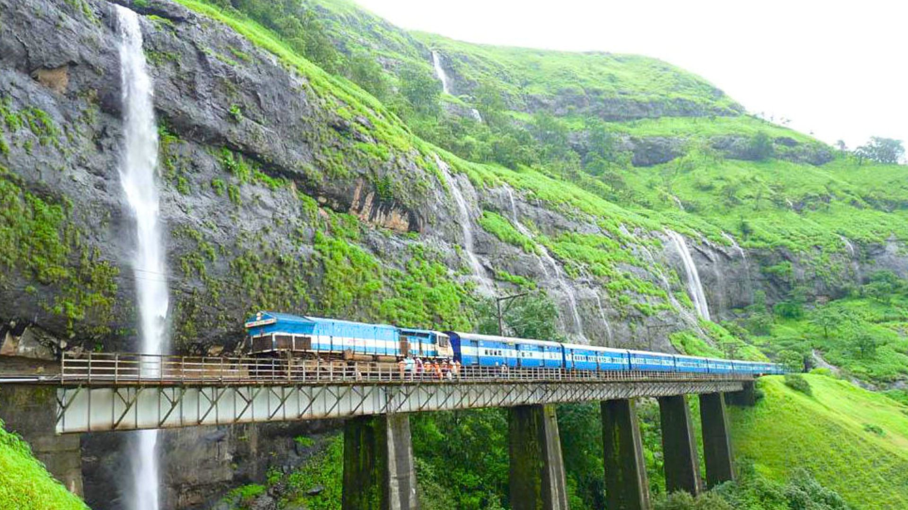
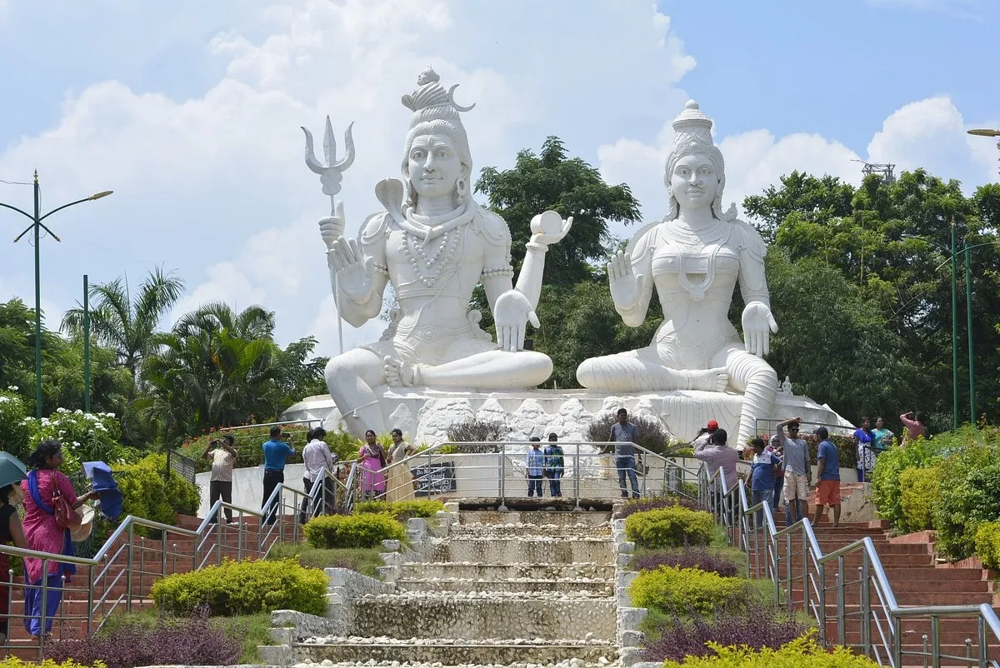
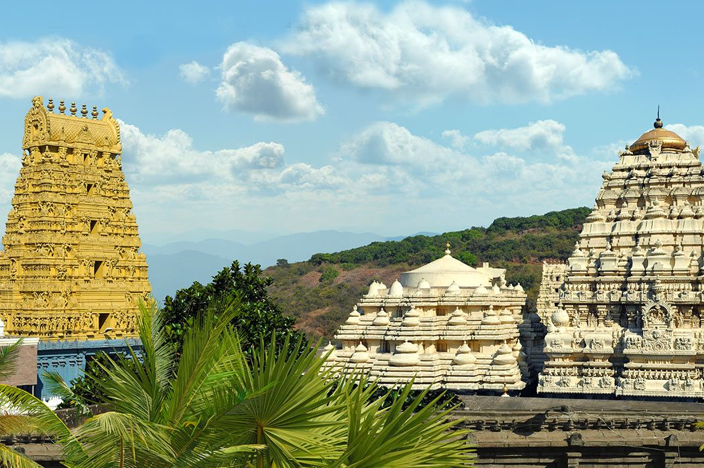
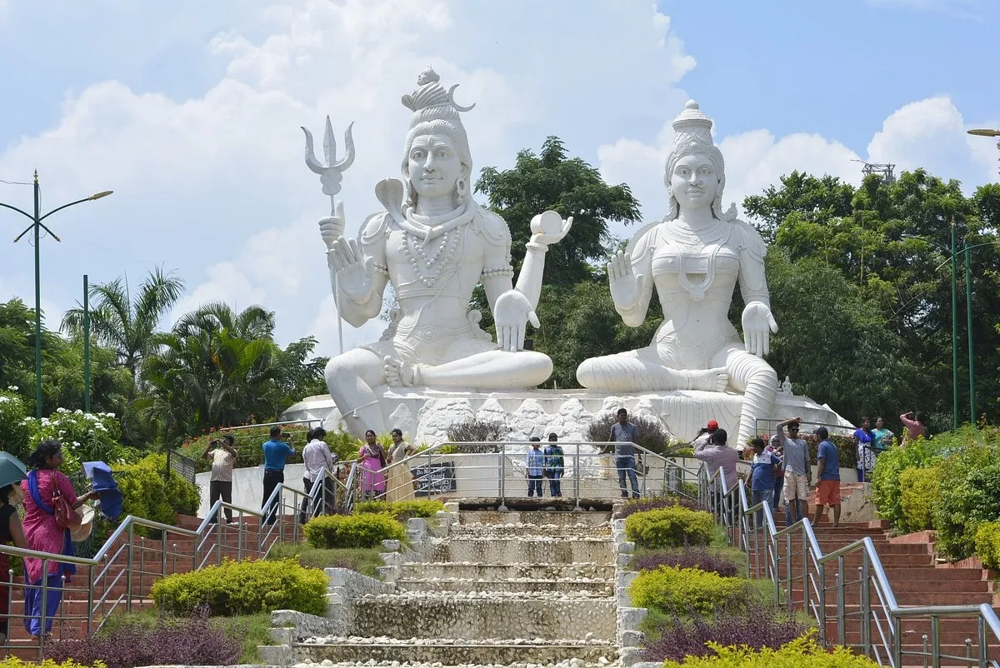
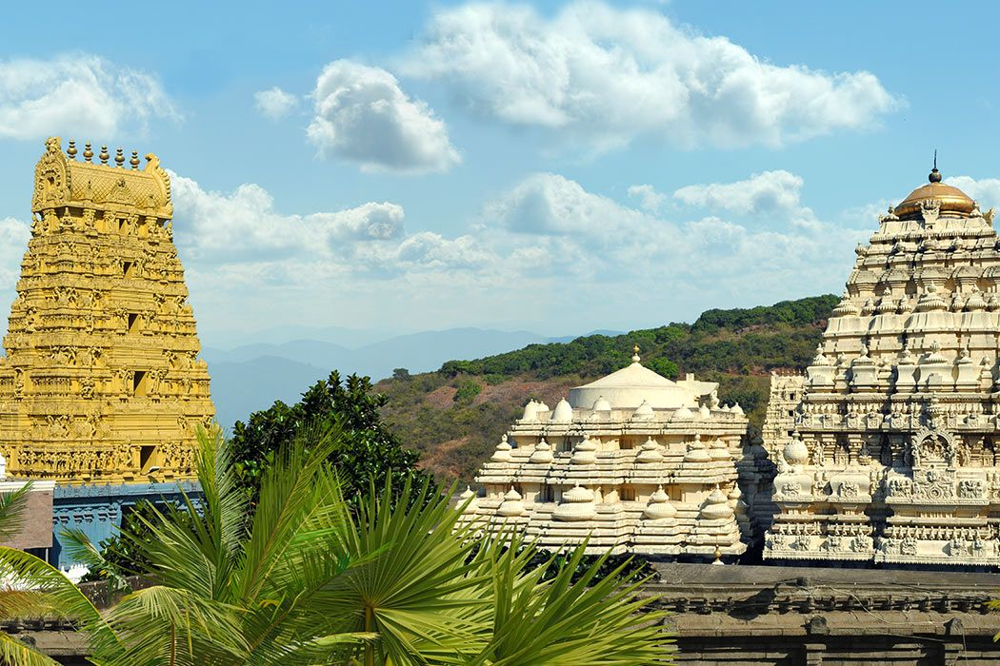
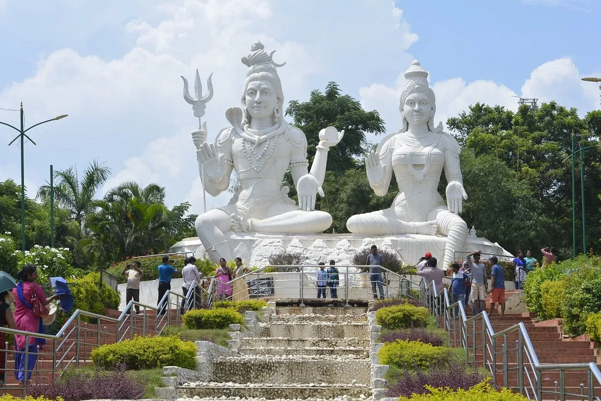
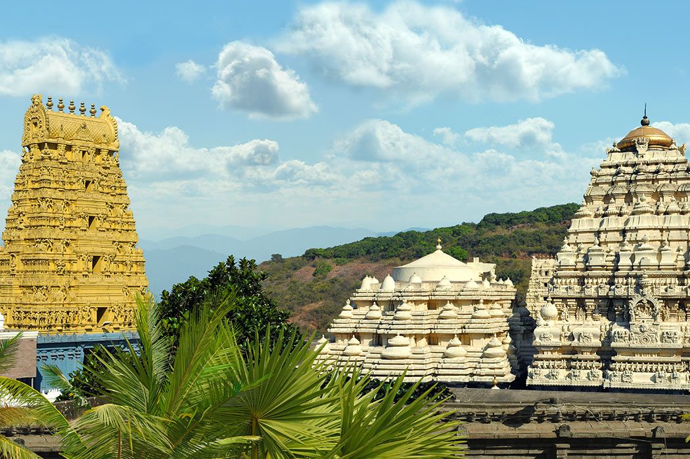

Vizag's Tourist Places

 





Exploring the Tourist Places
Vizag's is known as the "CITY OF DESTINY". These are the most visit places like Araku Valley,Devarapalli Waterfalls,Kailsagiri,Sri Varahalaxmi Temple,Simhachalam.
Vizag is a beautiful city with many tourist attractions. The places mentioned above are just a few of the highlights. Each location offers a unique experience, from the serene beauty of Araku Valley to the spiritual significance of Simhachalam. Whether you're looking for adventure, relaxation, or cultural